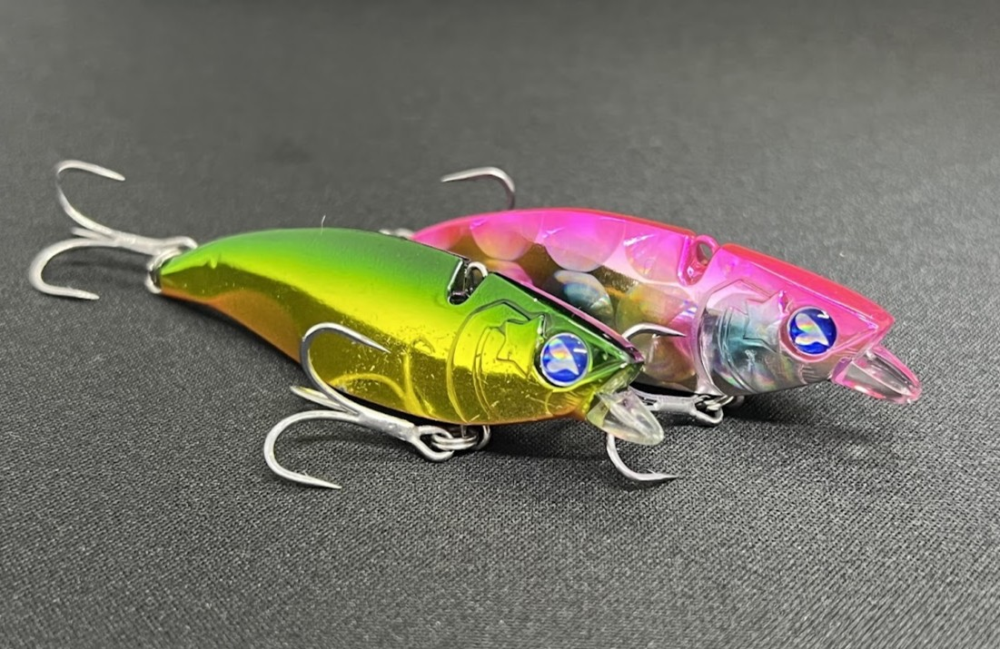
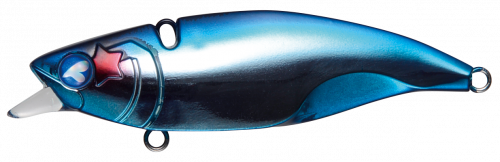
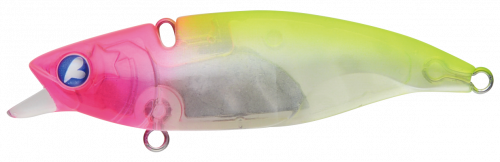
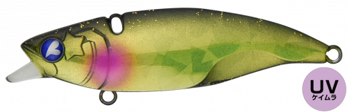
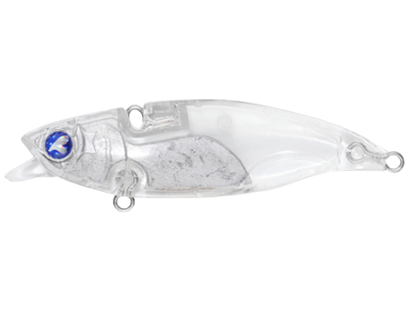

ナレージ65（Narage 65）
ナレージ65（Narage 65）はBlueBlue（ブルーブルー）を代表するバイブレーションです。
低速でもしっかり振動すること、リップにより根がかりしにくいことから使用できるフィールドが非常に広く、エリアを問わず愛される名作。「エビらない」バイブレーションとしても知られ、初心者から上級者まで信頼して使い続けられる一本です。

スペック
- メーカー
- BlueBlue（ブルーブルー）
- 長さ
- 65 mm
- 重さ
- 17 g
- フック
- #8×2
- リング
- #2
- レンジ
- 全レンジ（リトリーブ速度で調整可）
- タイプ
- バイブレーション
- 沈下タイプ
- シンキング
- アクション
- バイブレーション＋サイドターンフォール
- ターゲット
- シーバス・クロダイ（チヌ）
- 価格
- 1,738円（税込）
- 発売日
- 2015年
▼今すぐチェック

ナレージ65の特徴
「エビらない・根がからない・低速で泳ぐ」——三拍子そろった万能バイブレーション
-
リップにより根がかりしにくい
普段なら根がかりするような構造でも、リップが先に当たることで回避してくれる。牡蠣瀬やゴロタなど攻めにくいフィールドにも安心して投げ込める。
-
独自開発のボディ形状でエビらない
バイブレーションにしては驚異のエビりにくさで、初心者〜上級者に愛される性能。開発の際には水中映像を撮影してエビる現象を研究し、今のボディ形状にたどり着いたという。
-
一般的なバイブレーションより低速域に対応
ナレージの開発コンセプトのひとつで、スローでもしっかりバイブレーションする構造。スローで引けるためボトム付近の魚にもじっくりアピールできる。
ナレージ65の使い方
基本はただ巻き。リトリーブ速度でレンジを調整できるため、表層からボトムまで1本で探れる。スローに引けるのでシャロー帯でも浮き上がらせすぎずトレースでき、牡蠣瀬など根がかりが怖い場所ではリップを当てながら攻めるのが有効。ライントラブルが少なくキャストを重ねられるので、広範囲をテンポよくサーチする釣りにも向く。
ナレージ65の得意な状況
牡蠣瀬・ゴロタ・シャロー帯など、通常のバイブレーションでは根がかりが怖くて攻めきれないフィールドが最大の出番。スローで引けるためシャローも攻略でき、河川・港湾・干潟と幅広く対応する。ライントラブルの少なさで場を荒らさずに釣りができるため、ハイプレッシャーなポイントでも強い。シーバスに加えてクロダイにも実績がある。
ワンポイント
サイドターンフォールが食わせの間を作るのに効果的。ただ巻きの合間に糸を少したるませることで、ナレージを一瞬横に向けてフラつかせて食わせる技だ。BlueBlueの増井さんが編み出したテクニックで、なかなか口を使わないシーバスに効く。
「安いから」と手を出すと釣れないだけでなく、本家の性能を誤解したままになってしまう。必ずBlueBlue正規品を購入しよう。
人気カラー

ブルーブルーブルーブルーカラーは安定。フラッシングを求める時はこれ。

ピンクチャートクリアブルーブルー人気No.1カラー。迷ったらこの一本。

ランガンバレット濁りの中でナチュラルにアピールできる高実績カラー。

フルクリアオンラインショップ限定のクリアカラー。UVコートで妖艶に誘う。
画像出典:blueblue公式HP
ナレージシリーズ
- ナレージ50（Narage 50）
- ナレージ65（Narage 65）
- ラトリンナレージ65（RATTLIN Narage 65）
ナレージ65に似ているルアー
- ナレージ50（ブルーブルー）——同シリーズの小型版。ベイトが小さい時・より繊細に食わせたい時に。ナレージ50の記事はこちら。
- ラトリンナレージ65（ブルーブルー）——ラトル入りの派生モデル。濁りやローライトで音のアピールを足したい場面に。
- レンジバイブ70ES（バスデイ）——シーバス用バイブの定番。ナレージが根がかり回避と低速対応に振っているのに対し、レンジバイブは巻きの実績で選ばれる。